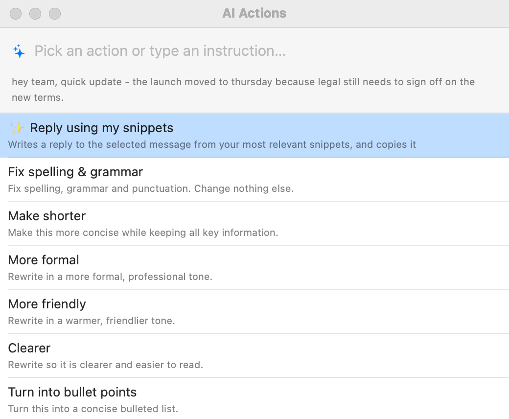

AI Features
Optional ways to use AI. Each one needs an AI provider first: see Setting Up AI. Apple Intelligence on this Mac needs no key and sends nothing anywhere.
AI Actions
Rewrite, shorten, translate, or tidy any text you’ve selected, in any app.
- Select some text, for example a rough email draft.
- Press ⌃⌥A, or choose ✨ AI Actions on Selection… from the menu bar icon.
- A panel appears near your cursor showing the start of your selection. Click an action, or use ↑ ↓ and Return.
- Or type your own instruction, e.g. make this sound less annoyed. Typing also filters the list; if nothing matches, press Return to use your words as the instruction.
- “✨ Working…” appears briefly, then the result replaces your selection.

Built-in actions: Fix spelling & grammar, Make shorter, More formal, More friendly, Clearer, Turn into bullet points, Expand into an email, Translate to Spanish, and Translate to English.
Don’t like the result? Press ⌘Z; in most apps that brings your original text back.
To change the list of actions
- Open Settings ▸ AI and scroll to the AI Actions section.
- Edit an action’s name or instruction in place, drag to reorder, or click the minus button to remove one.
- Click Add Action for a new one, e.g. name Translate to French, instruction Translate into French.
- Restore Defaults brings back the built-in list.
To use a different shortcut, change AI Actions on Selection in Settings ▸ Hotkeys.
Selections longer than 20,000 characters are cut to that length before being sent.
AI in snippets: %ai
Let AI write part of a snippet each time it expands. Put the instruction between %ai: and %:
| Abbreviation | Content |
|---|---|
;reply | %ai:Write a brief, polite reply to this message: {clipboard}% |
;tldr | %ai:Summarize this in 3 bullet points: {clipboard}% |
;decline | Hi %filltext:name=Name%,⏎⏎Thanks for the invitation to %fillpopup:name=Event:the meeting:the dinner:the call%. %ai:Write one warm sentence declining an invitation to {Event}.%⏎⏎John |
{clipboard}is replaced with the text on your clipboard, and{Field name}with what you typed into that fill-in, before the prompt is sent.- If the snippet has fill-ins, you fill them in first; then the AI writes.
- Your abbreviation disappears at once and “✨ Writing…” shows while the AI works. You can keep typing elsewhere meanwhile.
- Several
%aiparts in one snippet are written at the same time. - If it fails, your abbreviation is typed back and a message explains why (AI errors).
- The prompt can’t contain a
%sign; write “percent”.
The snippet editor’s Insert ▸ AI ✨ menu has ready-made prompts: AI Text…, Summarize Clipboard, Reply to Clipboard, and Fix Clipboard Text.
Suggest with AI
Turn a piece of text into a reusable snippet: AI picks an abbreviation and label, and replaces the parts that change (names, dates, amounts) with fill-ins.
- Open a snippet in the editor, or select text in any app and choose Create Snippet from Selection….
- Click Suggest with AI.
- In the Create Snippet window, the abbreviation, label, and text are filled in for you; change anything before clicking Create.
- In the main snippet editor, a dialog Use this suggestion? shows the result. Choose:
- Use All: takes the suggested abbreviation, label, and text (the text only for plain-text snippets).
- Abbreviation & Label Only: keeps your text, takes the label, and takes the abbreviation only if the snippet has none.
- Cancel: changes nothing.
It avoids abbreviations you already use. It’s not available for script snippets.
Fill from Clipboard
When a snippet has fill-in fields, AI can fill them in from text you copied, such as a customer’s email.
- Copy the text that has the details (for example, an email with the person’s name and order number).
- Type the snippet’s abbreviation. The fill-in window opens.
- Click ✨ Fill from Clipboard. AI fills in the fields it can find in the copied text.
- Check the values, change anything, and press OK.
Only the copied text, the field names, and the pop-up menu choices are sent. AI only fills in what the text actually says; a pop-up field only takes one of its own choices.
Reply using my snippets
Select a message you received (an email, a chat, a support ticket), press ⌃⌥A, and choose ✨ Reply using my snippets. Shorthand Expander™ finds your snippets that fit the message best, on your Mac, and AI writes a reply using their wording. The reply is copied, so you can paste it where you want; the selected message isn’t changed.
- It sends the selected message and the text of up to 8 of your snippets. The first time, Shorthand Expander asks before sending snippets to a cloud provider. With Apple Intelligence, nothing leaves your Mac.
- Groups set to Never send to AI and script snippets are never used.
Tone by app
Tell AI how to sound in each app or website: casual in Slack, professional in Mail, upbeat on linkedin.com. AI Actions and %ai snippets use the tone for the app you’re typing in.
- Open Settings ▸ AI ▸ Tone by app.
- Click Add App… or Add Website…, then describe the tone, for example Casual and brief. No sign-off. (Add Examples fills in three to start from.)
A website rule wins over its browser. Actions that shouldn’t change tone, such as translations and spelling fixes, skip it; each action has a Use tone by app checkbox.
Translate a group
Right-click a group in the sidebar and choose Translate Group…. Pick a language, and Shorthand Expander makes a translated copy, for example “Support (Spanish)”.
- Fill-ins, dates, the clipboard, and other codes stay exactly as they are. If AI changes one, that snippet is copied untranslated and listed, so you can fix it by hand.
- The copy starts turned off, so its abbreviations don’t clash with the original. You can add an ending to every abbreviation, such as
-es. - Formatted snippets come out as plain text.
- It sends each snippet’s text (without its codes), one at a time. Shorthand Expander asks once before sending snippets to a cloud provider.
AI assistants (Claude Desktop and others)
AI assistants on your Mac that support MCP, such as Claude Desktop, Claude Code, and Cursor, can search your snippets and fill them in for you (“draft the refund reply for Dana”).
- Open Settings ▸ AI and turn on Let AI assistants use my snippets.
- Click Copy Claude Desktop Setup. In Claude Desktop, choose Settings ▸ Developer ▸ Edit Config, paste it into the file, and restart Claude.
- Assistants can only read. They can’t change your snippets.
- Script snippets, snippets that use
%ai, your clipboard, and groups set to Never send to AI are never shared. - Nothing works while Shorthand Expander is locked, and it only works while the app is running.
- Settings shows which assistant used it last, and when.
What each feature sends
| Feature | What goes to your AI provider |
|---|---|
| AI Actions | The text you selected |
%ai snippets | The prompt, with your clipboard and fill-in values if the prompt uses them |
| Suggest with AI | The text you’re turning into a snippet |
| Fill from Clipboard | The copied text, field names, and pop-up choices |
| Reply using my snippets | The selected message and up to 8 snippets (asks first) |
| Translate Group | The group’s snippet text, without codes (asks first) |
| Review Kept Codes (import) | Each imported snippet that still has another app’s codes |
| Search by meaning, Tune Up | Nothing: they run on your Mac |
With Apple Intelligence (on this Mac) as your provider, nothing in this table leaves your Mac.